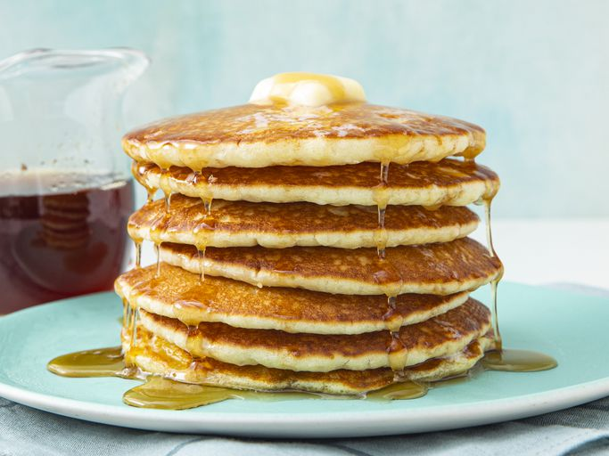

Buttermilk Pancakes
Home

Buttermilk Pancakes - that's it!
As convenient as a store-bought mix can be, every home cook needs a good buttermilk pancake recipe in their repertoire.
Don't have a tried-and-true favorite yet? You're in luck!
The Allrecipes community can't get enough of these classic buttermilk pancakes.
Reviewers say they're light, fluffy, moist, and full of rich flavor.
Here is what you need for those creamy pancakes
You probably already have everything required to make this top-rated buttermilk pancake recipe.
Here's what you'll need:
- Flour: All-purpose flour contains gluten, which gives the buttermilk pancakes structure and pleasant chewiness.
- Sugar: Just three tablespoons ofwhite sugar should be enough to lend subtle sweetness. Remember, you'll be adding a lot more sugar if you top the pancakes with syrup or molasses!
- Leaveners: Baking powder and baking soda act as leaveners (a substance that releases gas when mixed with other ingredients, causing the batter to rise to fluffy perfection).
- Salt: You definitely don't want to skip adding a small amount of salt — the buttermilk pancakes will taste bland without it.
- Buttermilk: Of course, you'll need buttermilk for buttermilk pancakes! This recipe calls for three whole cups.
- Milk: Wholemilk helps create the perfect batter consistency and cuts some of the buttermilk's acidity.
- Eggs: Three whole eggs add structure and rich flavor to the buttermilk pancakes.
- Butter: Melted butter lends flavor and keeps the pancakes nice and moist
Ingredients
- 3 cups all-purpose flour
- 3 tablespoons white sugar
- 3 teaspoons baking powder
- 1 ½ teaspoons baking soda
- ¾ teaspoon salt
- 3 cups buttermilk
- ½ cup milk
- 3 large eggs
- ⅓ cup butter, melted
How to make those babies
It's really quite easy to make perfect buttermilk pancakes at home. You'll find the full, step-by-step recipe below — but here's a brief overview of what to expect:
- Mix the dry ingredients: Combine flour, sugar, baking powder, baking soda, and salt in a large bowl.
- Mix the wet ingredients:Beat the buttermilk, milk, eggs, and melted butter together in a separate bowl. Do not combine the wet and dry ingredients until right before you cook the pancakes.
- Make the pancakes:Add the wet ingredients to the dry ingredients and mix with a wooden spoon or fork until the mixtures are just-blended. Scoop the batter onto a hot, oiled griddle and cook until the pancake is bubbly on the top. Flip with a spatula and cook until both sides are brown.
Step-by-step directions
- Combine flour, sugar, baking powder, baking soda, and salt in a large bowl. Beat buttermilk, milk, eggs, and melted butter together in a separate bowl. Keep the two mixtures separate until you are ready to cook.
- Heat a lightly oiled griddle or frying pan over medium-high heat. You can flick water across the surface and if it beads up and sizzles, it's ready.
- Pour the wet mixture into the dry mixture; use a wooden spoon or fork to mix until it's just blended together. The batter will be a little lumpy which is what you want.
- Pour or scoop batter onto the preheated griddle, using approximately 1/2 cup for each pancake. Cook until bubbles appear on the surface, 1 to 2 minutes; flip with a spatula and cook until browned on the other side. Repeat with remaining batter.
- Serve hot and enjoy!